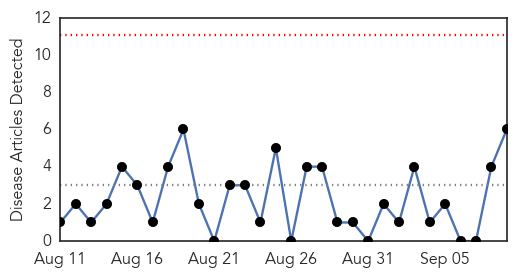
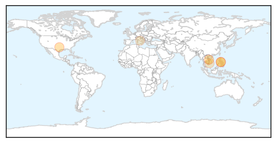
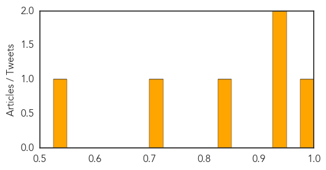
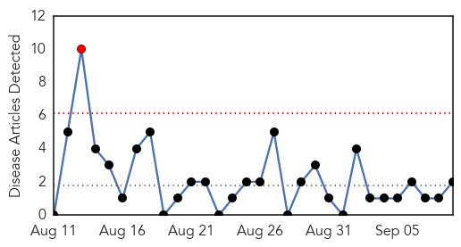
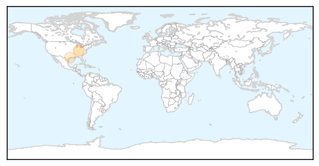
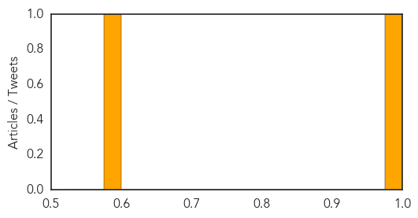

Measles
30-Day Web Trend
0 alerts, 0 warnings

30-Day Twitter Trend
0 alerts, 0 warnings

Article Locations
Article Confidences
Top Articles:
- 0.996
- Ohio measles outbreak seems to end, with 377 cases
- 0.947
- Docs puzzled over enterovirus testing
- 0.935
- Precautions urged for ...｜Society｜WCT
- 0.827
- Ohio measles outbreak seems to end, with 377 cases
- 0.717
- Vietnam to give kids under 15 free measles vaccines
- 0.528
- Report: Roma in 'poorer health' condition than average
Top Tweets:
-
No tweets found for Sep 09, 2014
Pertussis
30-Day Web Trend
1 alerts, 0 warnings

30-Day Twitter Trend
0 alerts, 0 warnings

Article Locations
Article Confidences
Top Articles:
Top Tweets:
-
No tweets found for Sep 09, 2014